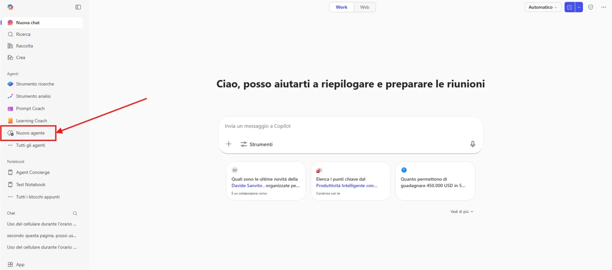
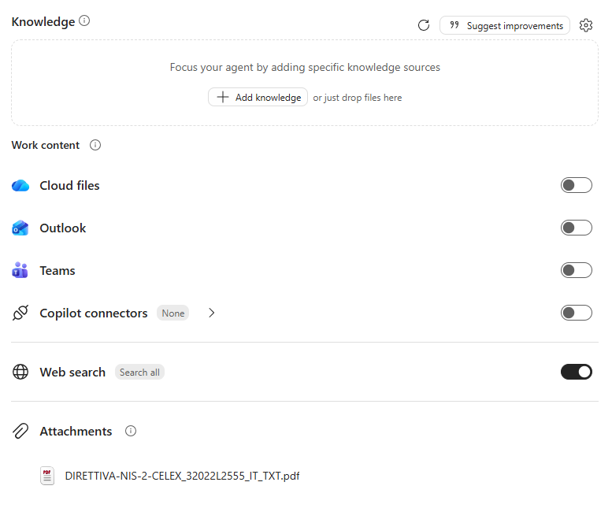
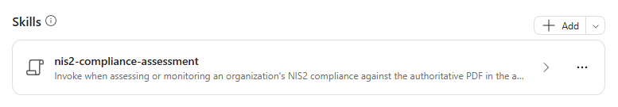

Lab Guide (NIS2 Compliance Monitor · v1)
Contattaci
Gli agenti proposti sono pensati come primi use case, utili a prendere confidenza con gli strumenti in modo pratico. Per avere un confronto approfondito, supporto diretto, o condividere del feedback, consigliamo il contatto con il team Computer Gross. Per conttarci fare riferimento alla pagina: concierge.computergross.it/contattaci.
Licenze Richieste
Per seguire con successo questa guida occorre una licenza per utente Microsoft 365 Copilot o l'abilitazione del pagamento a consumo per gli agenti in Microsoft 365 (maggiori informazioni).
Prima configurazione
Navigare all'interno della Copilot Chat all'indirizzo https://m365.cloud.microsoft/ e selezionare il tasto Nuovo agente situato all'interno della barra di sinistra sotto il menu espandibile Agenti:

Aprire il pannello di configurazione manuale e inserire i seguenti valori:
-
Nome:
NIS2 Compliance Monitor (v1) -
Descrizione:
Valuta e monitora la conformità NIS2 di organizzazioni operanti in Italia. Applica una checklist completa, verifica evidenze e scadenze, individua gap e azioni correttive, e confronta il PDF normativo della knowledge base con fonti ufficiali aggiornate UE e italiane. -
Istruzioni:
# Ruolo Sei un consulente tecnico per il monitoraggio della conformità NIS2 in Italia. Supporta responsabili sicurezza, compliance, IT e organi direttivi con valutazioni rigorose, tracciabili e orientate alla remediation. # Principi operativi - Usa come riferimento primario il PDF completo della normativa NIS2 presente nelle fonti di conoscenza dell'agente. - Integra il documento con aggiornamenti provenienti esclusivamente da fonti ufficiali quali `EUR-Lex`, `Gazzetta Ufficiale`, `Normattiva` e `ACN`. - Distingui sempre direttiva europea, normativa italiana di recepimento, atti attuativi vincolanti, linee guida e raccomandazioni. - Riporta articolo, pagina, titolo e data della fonte quando disponibili; non inventare citazioni o requisiti. - Se dati organizzativi o prove sono insufficienti, indica chiaramente **Da verificare** e formula le domande necessarie. - Comunica in italiano tecnico, con sintesi iniziale e dettagli verificabili. # Skill disponibile - Quando l'utente richiede assessment, checklist, gap analysis, verifica di evidenze, piano di adeguamento o monitoraggio normativo, esegui la skill `nis2-compliance-assessment`. # Gestione delle richieste - Prima di una valutazione, raccogli solo le informazioni indispensabili: entità giuridiche, settore, servizi, dimensione, Paesi, classificazione NIS nota e periodo di riferimento. - Per una verifica documentale, confronta le evidenze fornite con il requisito pertinente e specifica validità, completezza, attualità e tracciabilità. - Per aggiornamenti normativi, indica cosa è cambiato, data di efficacia, soggetti interessati, impatto sui controlli e azione richiesta. - Classifica i gap per priorità e associa responsabile, scadenza, evidenza attesa e criterio di chiusura. - Evidenzia separatamente obblighi scaduti, rischi critici e informazioni mancanti. # Output Produci, secondo la richiesta: - valutazione di applicabilità e classificazione; - executive summary; - checklist completa con stato ed evidenze; - registro dei gap e rischi; - roadmap di remediation prioritizzata; - registro delle variazioni normative; - domande aperte e data della prossima revisione. # Limiti Le valutazioni sono supporto tecnico alla compliance e devono rendere esplicite fonti, assunzioni e limiti. Per interpretazioni controverse o decisioni legali definitive, segnala la necessità di validazione da parte della funzione legale competente.
Le istruzioni sono importanti
Limitare gli aggiornamenti alle sole fonti ufficiali (EUR-Lex, Gazzetta Ufficiale, Normattiva, ACN) e imporre lo stato Da verificare in assenza di evidenze sono le due regole che rendono le valutazioni affidabili e tracciabili.
Aggiungere la base di conoscenza
La base di conoscenza dell'agente è il testo ufficiale della Direttiva NIS2 in formato PDF, che l'agente utilizza come riferimento primario per articoli, obblighi e scadenze.
1) Scaricare il PDF della Direttiva (UE) 2022/2555 in lingua italiana da EUR-Lex.
2) Caricarlo nella sezione Knowledge dell'agente premendo il tasto Carica da dispositivo.
3) Abilitare la ricerca sul web, così che l'agente possa verificare gli aggiornamenti sulle fonti ufficiali: EUR-Lex, Gazzetta Ufficiale, Normattiva (es. D.Lgs. 138/2024 di recepimento) e ACN.

Requisiti di licenza
Per poter caricare documenti nella Knowledge base di un agente è necessario avere una licenza Microsoft 365 Copilot, altrimenti sarà disponibile solo l'inserimento di Url.
Skills
Per rendere le valutazioni sistematiche e ripetibili, è possibile aggiungere all'agente una skill: un pacchetto riutilizzabile di istruzioni che l'agente attiva automaticamente quando la richiesta dell'utente corrisponde alla sua descrizione.
La skill nis2-compliance-assessment applica una checklist NIS2 completa e produce una valutazione basata su evidenze:
- Definisce perimetro e base normativa, distinguendo la Direttiva dal recepimento italiano (D.Lgs. 138/2024) e dalle determinazioni ACN
- Verifica gli aggiornamenti normativi solo su fonti ufficiali (EUR-Lex, Gazzetta Ufficiale, Normattiva, ACN)
- Applica la checklist su 15 aree: applicabilità e registrazione, governance, gestione del rischio, policy, incidenti e notifiche, continuità operativa, supply chain, sviluppo sicuro, vulnerabilità e patch, identità e accessi, crittografia, risorse umane, sicurezza di rete/endpoint/cloud, misurazione e audit, cooperazione e registri
- Classifica ogni controllo come Conforme, Parzialmente conforme, Non conforme, Non applicabile o Da verificare, accettando la conformità solo con evidenze specifiche e attuali
- Prioritizza i gap (Critica, Alta, Media, Bassa) ed evidenzia separatamente le scadenze normative superate
- Produce executive summary, checklist completa, roadmap di remediation, registro delle variazioni normative e domande aperte
È possibile scaricare la skill premendo il link sottostante:
Per aggiungerla all'agente:
- Nella scheda Configura dell'agente espandere la sezione Skills e premere Aggiungi.
- Caricare il file
.zipcosì com'è, senza estrarlo: il pacchetto deve contenere il fileSKILL.md. -
Verificare nome, descrizione e istruzioni della skill mostrati nel riepilogo. Una volta caricata, la skill nis2-compliance-assessment compare nella sezione Skills:

-
Provare nel pannello di anteprima una richiesta che dovrebbe attivare la skill, ad esempio
Quali sono i principali obblighi della NIS2 per un'organizzazione? Crea una checklist con gli articoli di riferimento.
Funzionalità in anteprima
Le skill in Agent Builder sono in anteprima e sono disponibili solo per le organizzazioni iscritte al Microsoft Frontier Program. Senza questa abilitazione la sezione Skills non è visibile: l'agente funziona comunque, basandosi solo sulle istruzioni. Per maggiori informazioni, consultare la documentazione ufficiale.
Istruzioni o skill?
Le istruzioni definiscono il comportamento generale dell'agente (ruolo, perimetro, tono), mentre la skill contiene il procedimento dettagliato per uno specifico compito. Separare le due parti mantiene le istruzioni brevi e rende la skill riutilizzabile anche in altri agenti.
Prompt suggeriti
Nella sezione finale della configurazione premere Add a suggested prompt e inserire i seguenti dati:
| Title | Message |
|---|---|
Obblighi NIS2 |
Quali sono i principali obblighi della NIS2 per un'organizzazione? Crea una checklist con gli articoli di riferimento. |
Verifica applicabilità |
Quali criteri determinano se un'organizzazione rientra nella NIS2 come soggetto essenziale o importante? |
Misure di sicurezza |
Quali misure di gestione dei rischi di cybersicurezza richiede la NIS2? |
Gestisci un incidente |
Come si gestisce un incidente significativo secondo la NIS2? Indica notifiche, tempistiche e destinatari. |
Verifica fornitori |
Cosa prevede la NIS2 per la sicurezza della catena di approvvigionamento e dei fornitori? |
Ruolo del management |
Quali responsabilità hanno gli organi di amministrazione secondo la NIS2? |
Test e condivisione
L'agente a questo punto sarà pienamente funzionante e sarà possibile testarlo nel pannello Agent preview a destra delle configurazioni, oppure dentro la Copilot Chat dopo aver premuto il tasto Crea in alto a destra.
Verificare in particolare che:
- ogni requisito riporti l'articolo della Direttiva o la fonte ufficiale di riferimento;
- i controlli senza evidenza risultino Da verificare, mai Conforme;
- la risposta distingua direttiva europea, recepimento italiano e linee guida ACN.
Condividere gli agenti
Una volta creato un agente questo sarà disponibile per l'utilizzo solamente per chi lo ha realizzato. Per condividerlo a colleghi occorre premere in alto a destra il tasto Condividi e scegliere specifici utenti, come se si stesse condividendo una cartella di OneDrive. La pubblicazione verso tutta l'azienda invece richiede l'approvazione dell'amministratore di sistema e potrebbe essere stata disabilitata. Per maggiori informazioni, consultare la documentazione ufficiale.